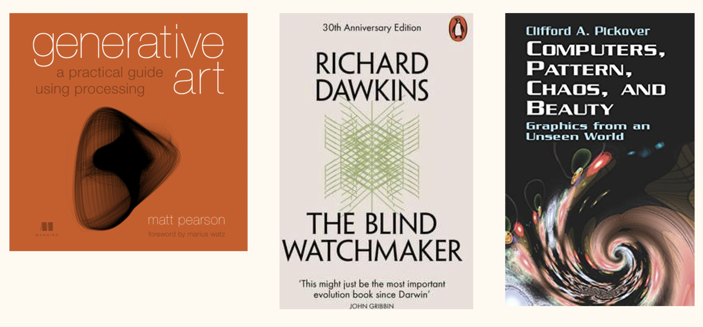

Can Code,
Will Generate Art
@purnimakamath
Director @wwcodesingapore
Evangelist @yow_conf
Will Generate Art
@purnimakamath
Director @wwcodesingapore
Evangelist @yow_conf
Why Creative Coding?
- Fun!
- Learn new technologies by making something
- Practise 10,000 hrs! (Thank you, Mr. Gladwell)
Creative coding techniques
- SVG or CSS Art
- Generative Art
- Art using Neural Networks
What is Generative Art?
Technologies in this presentation
- p5.js
- d3.js
- tensorflow.js
Follow along ->
https://pkamath2.github.io/voxxed-genart-reveal/
OR
https://github.com/pkamath2/voxxed-genart-reveal
npm installnpm startFIBONACCI SEQUENCE (First 300) - #p5js
fn = fn-1 + fn-2
Sequence:
0, 1, 1, 2, 3, 5, 8, 13, 21, 34, 55...
300th number: 2.2223224462942035e+62
Sequence:
0, 1, 1, 2, 3, 5, 8, 13, 21, 34, 55...
300th number: 2.2223224462942035e+62
FIBONACCI SEQUENCE (First 300) - #p5js

FIBONACCI SEQUENCE (First 300) - #p5js

FIBONACCI SEQUENCE (First 300) - #p5js

FIBONACCI SEQUENCE (First 500) - #p5js

More art using p5.js
More art using p5.js
PERLIN NOISE - #d3js
PERLIN NOISE - #d3js
PERLIN NOISE - #d3js

PERLIN NOISE - #d3js
Generative Art using Neural Networks
Generative Art using Neural Networks

Generative Art using Neural Networks
- These are called “Compositional Pattern Producing Networks” or CPPNs.
- A term coined by Kenneth O. Stanley in a paper (see reference) in 2007
DEMO!
Generative Art using NN - The Wasp

3 hidden layers tanh activation
Sigmoid output
Squared input x
Generative Art using NN - Batik Fractals

32 hidden layers tanh + relu activation
Sigmoid output
Periodic (sin) input x & y
Generative Art using NN - A Face?
64 hidden layers tanh activation
Sigmoid output
CPPN - Neuro Evolution Of Augmented Topologies
CPPN - Neuro Evolution Of Augmented Topologies
My Own Picbreeder
Technology Selection for GenArt using NNs
- Tensorflow.js (tfjs-node for server side art generation)
- Node.js
- HTML Canvas & PNGStreams
- D3 for network topology visualisation
Source Code: https://github.com/pkamath2/picbreeder-tf-node
Books
References
- The original picbreeder – http://picbreeder.org
- My Blog: Generative Art using Neural Networks
- Blog: Abstract Patterns using Tensorflow, David Ha
- Paper: What is Generative Art?, Philip Galanter
- Paper: Compositional Pattern Producing Networks, Kenneth O.Stanley
- Paper: Evolving networks through augmented topologies, Kenneth O.Stanley